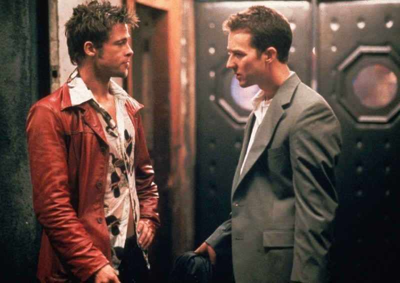

Bem-vindo ao meu site sobre o filme Fight Club. Aqui podes conhecer a história, as personagens e algumas curiosidades sobre este filme.

Fight Club é um filme de 1999 realizado por David Fincher. A história acompanha um homem insatisfeito com a sua vida, que conhece Tyler Durden. Juntos, acabam por criar um clube de luta clandestino.